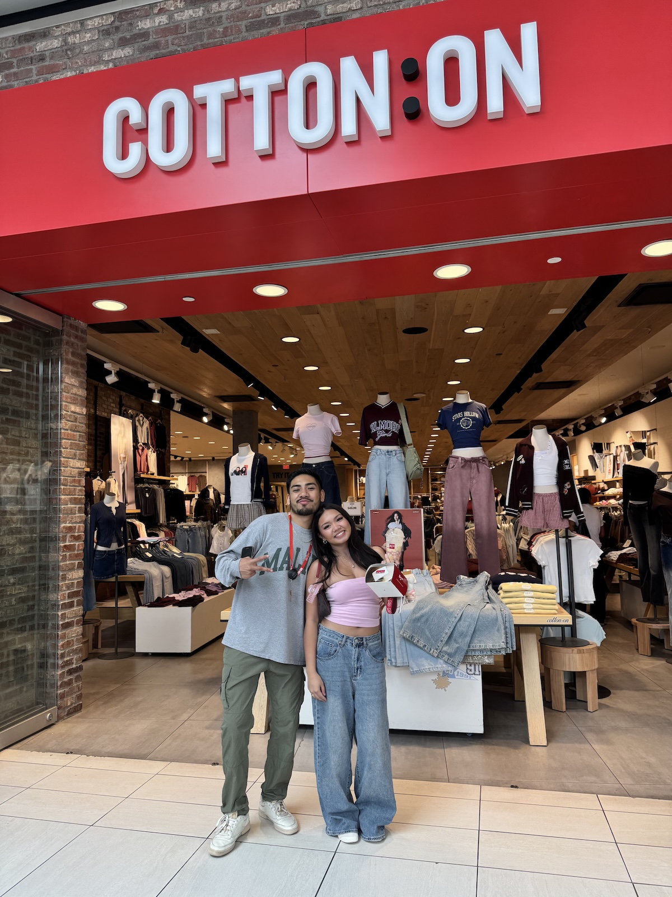
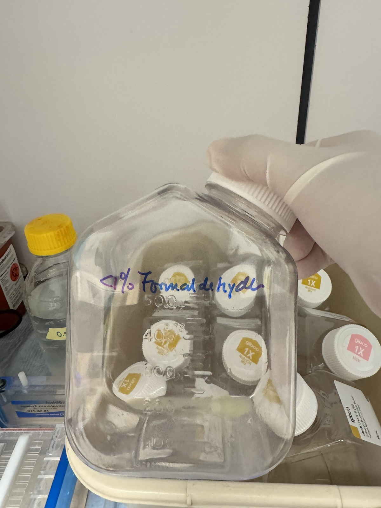
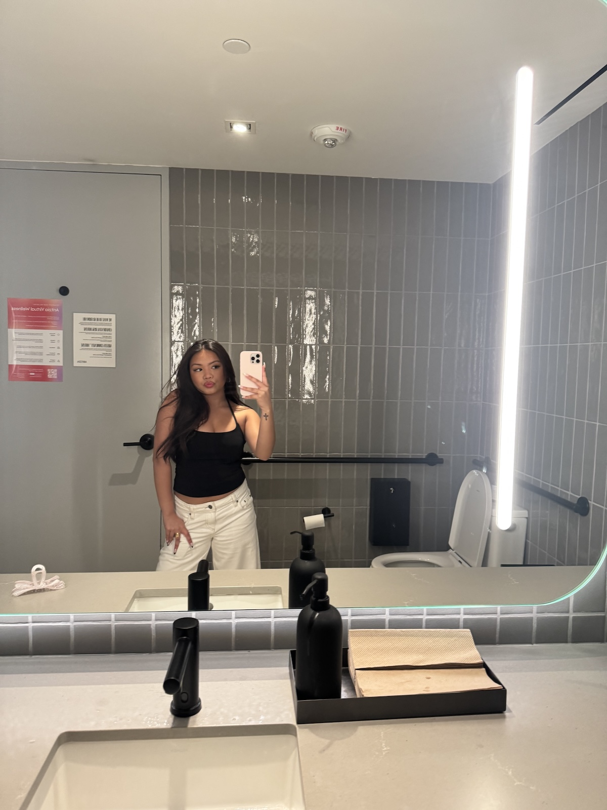
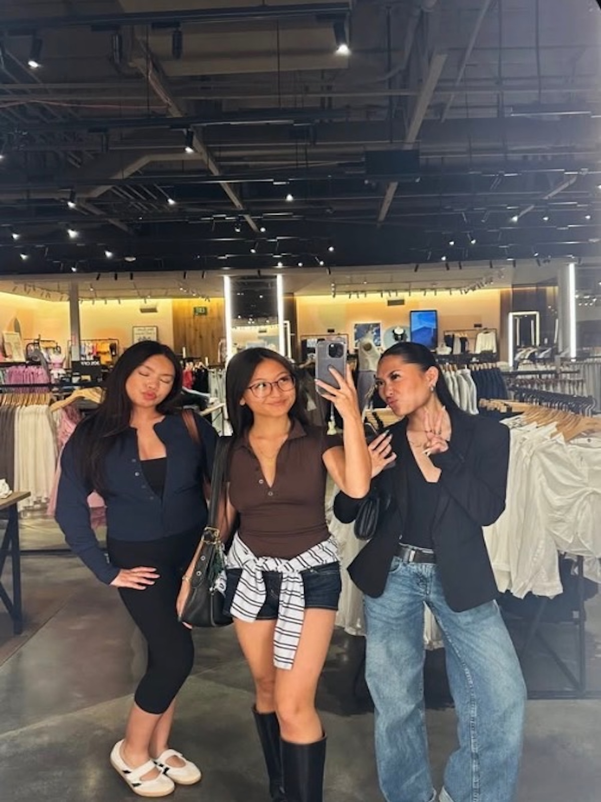

I am currently a Biology student at the University of California, Riverside with a strong passion for healthcare, science, and personal growth. Ever since I was younger, I have been drawn to healthcare through helping family members who experienced ongoing health issues. As a little girl, I loved simple tasks like helping check blood pressure and blood sugar levels, which sparked my curiosity about medicine and caring for others. My passion for becoming a Dematology PA also comes from my own expreinces struggling with a skin condition at a younger age and wanting help from a doctor that was not always accessible due to financial limitations. Those experiences inspried me to pursue a career where I can help people feel more confident, comfortable, and cared for while combining my interests in healthcare, science, and dermatology.
Alongside my studies, I currently work as a Laboratory Assistant within a biochemistry lab, where I support daily laboratory operations and help maintain an organized and efficient environment for faculty and students. My responsibilities include monitoring inventory, coordinating supply orders, organizaing equipment, assisting with inspections, and supporting overall lab maintenance. Through this experience, I have developed strong attention to detail, organization, communication, and problem-solving skills. Working in a scientific environment has strengthened my appreciation for teamwork, reasearch, and the importance of precision within healthcare and laboratory settings.
In addition to my laboratory experience, I also work in retail and fashion, including my role as a Sales Associate at Cotton On and as a Style Advisor at Aritzia. These experiences have helped me stengthen my leadership, communication, customer service, and adaptability skills in fast-paced evironments. I enjoy helping customers feel confident through fashion while also balancing academics and professional growth. Outside of work and school, I enjoy beauty, organization, creativity, and personal development.
• Assist with daily laboratory operations by organizing equipment, monitoring inventory, and maintaining an efficient work environment for faculty and students
• Coordiate supply orders, submit work orders for maintenance and repairs, and support laboratory inspections and compliance procedures
• Develop strong organizational, communication, and problem-solving skills while working in a scientfic environment
• Deliver strong customer service in a fast-paced retail environment while consistently contributing to weekly sales and KPI goals
• Support store operations through inventory organization, shipment processing, visual merchandising, and floor recovery
• Work collaboratively with team members while adapting quickly to different responsibilities and maintaining brand presentation standards
• Provide personalized styling reccomendations and create positive client experiences while building strong customer relationships
• Support daily store operations through merchandising, fitting room support, and maintaining everyday luxury brand standards
• Develop strong communication, multitasking, and problem-solving skills in a fast-paced, team-oriented retail environment
• Assist clients with product selection, outfit coordination, and styling advice to help them feel confident and comfortable with their purchases



